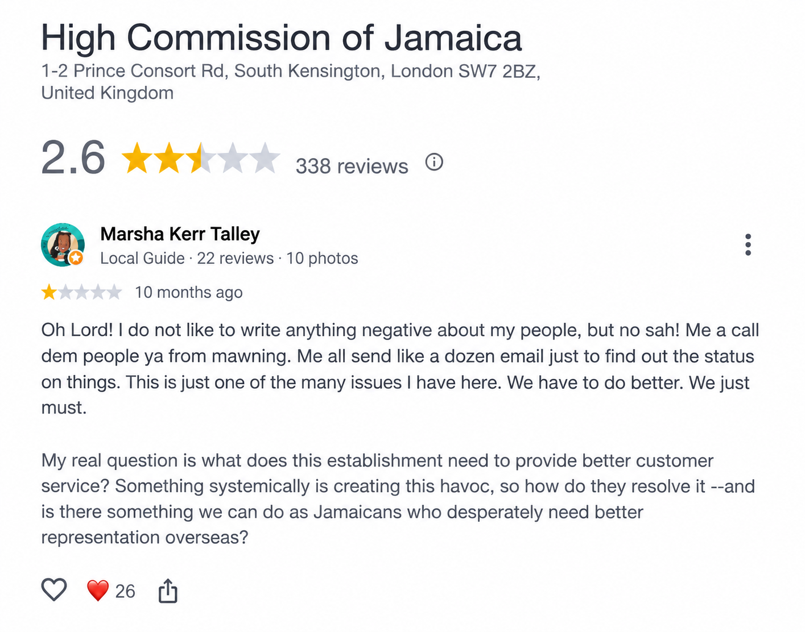

Start here
Confirm Returning Resident eligibility
Do not assume you qualify just because you are coming home. Check the criteria and get the approval process moving.
I left Jamaica at 14 and came back decades later. I am Jamaican, but living here again as an adult is a whole different experience from coming home for a holiday. I am learning the systems, the prices, the people, the shortcuts that help and, yes, the processes that can work your last nerve. I am sharing what I learn as I live it because somebody coming behind me should not have to figure out every single thing the hard way.

There is so much I love about being back in Jamaica. This page is not about bashing my country. It is about helping people returning home navigate some of the things I had to learn the hard way.
I am sharing the good, the frustrating and the things I wish somebody had told me before I packed a container, shipped my car and started rebuilding my life here. Where something went wrong, I will tell you that too. Where I can, what I did next.
I have had some hard lessons since returning to Jamaica, and you will read about some of them here. But that is not the whole story. I have also had a tremendous amount of help.
I have literally made more contacts here in Jamaica in weeks than I did in the UK in three years. People have not gate-kept important information from me. They have put me on, told me who to call, where to go, what to ask, and sometimes helped me get into rooms I would not have known how to enter on my own. My experience so far is that when people realise you are ambitious, driven and serious about what you are trying to build, some people genuinely want to help you move forward.
My aunt told me I would regret moving back to Jamaica, and yes, there are moments when I ask myself, “Marsha, did you make the right choice?” So far, though, what I am realising is that I can make it here. I just need to learn HOW to make it here.
Living in Jamaica is not the same as living in the US or the UK, and that is okay. I do not need Jamaica to operate like somewhere else. I need to learn how to live here.
Get the boring paperwork moving early. A TRN, Returning Resident approval, access to Jamaican dollars and one organised document file can save you a lot of running around later.

Do not assume you qualify just because you are coming home. Check the criteria and get the approval process moving.
Your TRN comes up repeatedly in tax, vehicle, banking and other Jamaican processes.
Have Jamaican dollars ready for deposits, transport, everyday transactions and the inevitable thing you did not budget for.
I am learning, though, that constantly comparing every Jamaican process with how I did things in the UK or US will frustrate me. Ask what the process is, prepare for it, and where you can respectfully suggest a more efficient way, do that. Sometimes the quickest route is simply learning how things currently work here.
I started my daughter's citizenship process while we were still living in the UK and followed up religiously. A couple of months before we moved to Jamaica, I found out that her name had been misspelled in the process. I then had to spend more money getting photographs done again and paying to resend documents to the Jamaican High Commission in London.
The frustration with the Jamaican High Commission in London had actually started much earlier. Before I even moved to Jamaica, only a couple of months after I first submitted my daughter's citizenship application and renewed my passport, I had already posted a Google review about the difficulty I was having getting updates and answers.

One thing that helped was keeping the same email thread going. I spoke with different people and emailed managers, but keeping the history together made it much easier to show what had already been said, what I had sent and what I was waiting for.
When we arrived in Jamaica in July, we went to PICA in person to check the progress. We were told to write a letter asking for the citizenship certificate to be collected locally when it was ready. Later, someone called and told me we had to come back to PICA and write a second letter because the first one had been written on the wrong paper. We got a ride there and did it again.
Yet when I followed up in August, I was told the certificate had been mailed back to the UK because our request to collect it in Jamaica had not been received in time. That was after I had sent several emails saying that we were now living in Jamaica, asked whether the requested letter could be sent electronically, sent one electronically anyway, and physically went to PICA twice.
I initially asked for a digital copy and was told that could not be done. After I asked both PICA and the Jamaican High Commission in London for the information I needed to make a formal complaint, someone sent me an electronic copy of my daughter's citizenship certificate and said the physical document would be sent back to the local office. I am still following up for the formal complaint information because this is exactly why keeping a paper trail matters.
At one point I was so frustrated I wondered whether I had pissed somebody off. I have no evidence that was why the document was sent back overseas. I simply could not understand why it happened after all the emails and the two visits to PICA.
The company you pay overseas is only one part of the story. Find out who will actually touch your shipment once it reaches Jamaica.
If sending a car and household goods, compare the full cost of shipping them together versus separately.
Before you pay, get the name, number and actual role of the person handling clearance in Jamaica. 'Somebody will deal with it' is not enough.
Ask what your money covers, what it does not cover, when storage starts and who is responsible at each stage. Get it in writing.
I recorded this sitting in my car after dealing with all sorts of nonsense regarding my car and personal belongings. I was tired, sweaty and completely irritated at this point. The day before was a whole other ordeal, but I will save that story for another day.
Initially, I posted the video to Facebook, but quickly decided to delete it. I wanted to share it here with context. Instead of only sharing my frustration, I wanted to share what I learned from the process and give you practical ways to avoid some of what happened to me.


These are some of the photos I took after receiving the car.
I hate posting anything negative online about my people or country, but the way many in Jamaica run businesses have got to change.
Imagine you spend yuh big big money fi ship yuh tings dem from farin. Only to end up in hell and powda house fi get them. It does not need to be this way, but the lack of accountability here is a problem.
We need systems in place that can hold Customs, wharf employees, brokers and the other people we depend on in this process accountable. Jamaica wants to become a developed nation, and this is one of the places where we can lead the way.
My experience is not the only story I have heard. People have shared their own shipping and vehicle-damage experiences with me. One man told me about a vehicle where part of the top was cut so it could fit in a container. Another told me about a car being badly scratched by the straps used to secure it. Those are accounts people told me directly, not incidents I independently verified, but they are another reason I now tell people to photograph and video the vehicle carefully before it is loaded and again before accepting it after shipping.
My advice now: get names, fees and responsibilities in writing; keep every receipt and payment record; ask for the official document behind any charge you do not understand; and move important conversations out of phone calls and into writing. A “link” can help you find the right person. It should never replace a transparent process.
Start with the company that actually handled the part of the process you are challenging. The shipping line, freight forwarder, terminal operator, broker and Jamaica Customs do not all perform the same role, so send the complaint to the organisation that was responsible for the disputed service. Ask for a written response, a claim or reference number, the company's claims procedure and any applicable insurance information. Attach the bill of lading, invoices, receipts, before-and-after photographs, collection documents, dates, names and repair estimates where relevant.
Make the written claim directly first. Check the bill of lading or contract for notice deadlines and claim requirements. If you are unsure which local company handled the cargo, the Shipping Association of Jamaica directory can help identify shipping agents, freight forwarders and terminal operators.
Complain to the broker in writing first. Jamaica Customs licenses Customs Brokers. If the problem concerns a broker's customs work or conduct and is not resolved, contact Jamaica Customs Customer Service and provide the broker's name and your supporting documents.
For a Customs service complaint, use the JCA General Queries or Complaints Form, email public.relations@jca.gov.jm, or call Customer Service at 876-948-7849 or toll-free 1-888-287-8667. JCA also lists quick.response@jca.gov.jm for general contact.
If you paid a Jamaican business for a product or service and the complaint remains unresolved, the CAC accepts formal consumer complaints. Its current contacts include complaints@cac.gov.jm, info@cac.gov.jm, 876-906-5425 and 876-619-4222.
Keep one email thread and ask for a case or ticket number. PICA currently lists 876-754-PICA (7422) and support@picahelpeu.freshdesk.com. Its REL-M customer relationship system is also designed to track issues. Citizenship services are handled at 8 Waterloo Road in Kingston and through Jamaican overseas missions.
For a citizenship matter involving an overseas Jamaican Mission, copy the Mission and PICA so both sides can see the same chronology. The Jamaican High Commission in London is currently listed at jamhigh@jhcuk.com and +44 20 7823 9911. The Ministry of Foreign Affairs and Foreign Trade also lists consular@mfaft.gov.jm for Consular Affairs.
Car-import mistakes can get expensive very quickly. Know the ownership requirement, get the permit sorted before shipping, and do not assume Returning Resident status means the vehicle is duty-free. Under the current Returning Resident rules, an eligible returnee may import a motor vehicle up to 10 years old, with full duty and taxes payable.
Complete the Trade Board vehicle import permit process before making final shipping arrangements.
Have the title/export record, seller invoice and evidence showing when you bought the vehicle.
A TCC (Tax Compliance Certificate) is required for motor-vehicle clearance. The vehicle must also be cleared through a licensed Customs Broker.

Learn what things normally cost. Use Jamaican dollars where it makes sense, keep payment records and ask people who actually live here where they shop.
Repeated card conversion and foreign-currency pricing can quietly eat into your money through rates and fees.
For major purchases, favour methods that leave a clear record and may offer dispute protection.
Farmers, market days and local suppliers can be very different from prices in tourist-heavy areas.
Since moving back, I have been connected to a LOT of people. Some of those introductions have helped me solve problems, find opportunities and get into rooms I would not have known about otherwise. Jamaica can be very relationship-driven, and WhatsApp groups are everywhere.
That can be a beautiful thing. It can also become noise very quickly. Every contact does not need to become a friendship. Every event does not need your attendance. Every WhatsApp group does not need your daily attention.
Attend events that connect to the life, work or community you are actually trying to build. You do not have to be everywhere.
They are useful for information, referrals, events and introductions. Mute the noisy ones. Leave the ones that add nothing. Protect your attention.
If you have a good conversation, send the message. Save the number with a note so six weeks later you remember who the person is and where you met.
Someone giving you a “link” does not automatically make that person, or the person they referred, trustworthy. Verify what needs verifying.
Networking should not feel like collecting people for what they can do for you. Share information. Make introductions when appropriate. Be useful too.
You can be warm, open and connected without telling everybody everything. Be selective about who gets access to your plans, finances and personal life.
What I am learning: relationships matter here, but intentional relationships matter more. Build your circle. Show up. Talk to people. Take the number. Join the group. Then use your judgement. You do not need 500 contacts. You need good people you can actually call, and people who know they can call you too.
This was one of those things I learned very quickly. You can get taxis and, in some areas, use ride-hailing apps. I have even been able to get an Uber up into more remote places. The problem is not always getting there. Sometimes the bigger question is: how are you getting back?
If a driver takes you somewhere that is harder to reach, ask whether they are available to collect you later. Save the number of a reliable local taxi driver. If you decide to arrange a return trip directly with a ride-hailing driver, remember that a trip arranged outside the app may not have the same in-app tracking or protections.
Local people can also be a huge help here. A driver who cannot collect you may know another driver who can. That has been part of my experience of Jamaica too. People will often give you the link rather than leave you to figure everything out alone.
Do not get into a vehicle simply because someone says they are your driver. Match what is in the app first.
Uber's Jamaica safety guidance specifically tells riders to match the plate, vehicle and driver before entering, and its Verify Your Ride feature can require a four-digit PIN before the driver starts the trip.
Uber currently lists service in Jamaican markets including Kingston and Ocho Rios, and its Montego Bay page also confirms availability there. Supply can still change by the exact pickup point.
Jamaica's Fair Trading Commission has also discussed inDrive, Ride Jamaica and 876 On The Go as ride-hailing model operators. The 876 On The Go app allows people to book rides now or later with a licensed taxi company, but the app itself warns that vehicles may not be available in every area. Check the app before depending on any service for a time-sensitive trip.
A local number becomes useful almost immediately for brokers, shipping calls, deliveries, drivers, WhatsApp, banking verification and everyday life.
Flow supports eSIM on compatible devices. In my case, an eSIM is particularly useful because you can get local mobile service without depending on a removable physical SIM. Check Flow's current activation instructions for your device and plan.
Do not assume every errand requires a drive. 7Krave offers restaurant delivery and also has 7Kravemart for groceries. Its current delivery policy lists Kingston & St Andrew, Portmore, Ocho Rios and Montego Bay, with charges varying by area.
Coverage changes, so enter your actual address in the app rather than assuming a service reaches your community.
Amber Eazzy is a Jamaican marketplace for buying, selling, renting and finding items and services. Listings can include cars, furniture, property, electronics and more, and the app supports filtering by parish.
Use the same caution you would on any marketplace: verify what you are buying, meet safely, keep payment records and do not let urgency push you into an irreversible payment.
When you find a reliable taxi driver, tradesperson, broker, delivery person or service contact, save the number. Jamaica becomes much easier when you begin building your own trusted little network of people you can actually call.
That is one of the biggest differences I have experienced since coming home: people have given me contacts instead of gate-keeping them.
If your income depends on being online, one internet connection and one source of power may not be enough. I learned that one early.

Homeowners can price rooftop systems. Renters can use portable solar panels and power stations for essentials.
If you work online, keep mobile data or another backup available even when you have fixed broadband or Starlink.
Battery storage, charged power banks and a properly used generator can make outages much easier to manage.
Flow was recommended to me and there was already a modem in the house, but I still could not get a working connection. Even after bills were paid, unresolved issues prevented service and I was told a technician was not being sent for new accounts at that time.
Digicel customer service was better in my experience, but service was inconsistent. After one outage I was still waiting weeks later for a technician call-back, so I moved to Starlink. Starlink has been more dependable overall, though I still find it slow at times. I especially appreciate being able to reach support directly through the app.
Afterwards, I called Digicel to discuss the visit and was told there was no record of Digicel sending anyone out and no work order showing that technicians had been assigned to my home. Understandably, that frightened me. Security confirmed that the men had checked out of the community.
I then called the person who had originally contacted me. He explained that they did not work directly for Digicel, but were subcontractors working through Konnex, and that jobs could be shared through a WhatsApp group for technicians in the area to pick up. I could not independently reconcile that explanation with what Digicel customer service had told me.
Know your real budget before somebody starts showing you houses. Know the kind of community you actually want too. A pretty house is not enough if the location, cost or lifestyle does not fit your life.
Tell the agent what you can comfortably afford, not simply the largest number a lender says you qualify for. If most of the properties being shown are above your range, redirect the search.
If you plan to finance the purchase, obtain a current mortgage pre-approval, or refresh an older one, before seriously viewing properties. That gives you a clearer ceiling and can make the process smoother when you find a house you want.
Commission is part of real-estate transactions, so your interests and the agent’s incentives are not automatically identical. You want an agent who respects your limits instead of continually steering you toward a more expensive sale.
There can be a stigma around older or ungated Jamaican communities: that they are dirty, run-down or unsafe. That is too simplistic. Some established communities have mature trees, larger lots, individuality, long-term neighbours and the Jamaican residential feel that some returnees are actually looking for.
Gated developments can offer newer homes, pools, gyms, landscaping, controlled entry and other conveniences. They can also experience security incidents, and the lifestyle can come with association fees and rules governing things such as exterior changes, parking, landscaping or even what colours a house may be painted.
One of the more unexpected parts of returning has been thinking about when I speak patois, when I use Standard English, and how people sometimes respond to the accent I brought home with me.
In this private conversation, I was talking to a local driver who advised me to chat patois to get better prices and treatment in certain situations. I understand what he means, but I speak patois when it comes naturally to me, not when I am forced. I should not have to switch up how I speak in order to receive fair treatment, a fair price or basic respect. I know that is typical overseas, and I am aware of code switching, but I am not going to do it by coercion in the place of my birth.

Clearing the container is one thing. Building an actual life is another. Your people, your routines, healthcare, transport, security and knowing who to call all matter.
Give yourself time to learn Jamaica again. Returning home does not mean you automatically know how everything works here now. You may know the culture, the food, the language and the people, yet still have to relearn systems, prices, places and everyday ways of doing things. That does not mean you made the wrong decision. It means you are settling in.
WhatsApp groups can connect you to jobs, events, services and people quickly. Join them, but do not let every group have unlimited access to your time.
Exterior lighting, cameras, secure locks and knowing your neighbours can help you feel settled without living in fear.
Meet people. Go places. Learn your community. Do not let fear turn coming home into sitting behind a gate watching Jamaica from the window.
Use this as a running list. Tick things off as you sort them; your progress stays saved in this browser.
Seven quick questions. No email. No sales funnel. Just check where you are.
If you are thinking about coming home, I know you are not only looking for Customs forms and phone numbers. You are trying to picture an ordinary Tuesday here. You are wondering whether you can actually build a life.
You want to know what happens when the excitement of moving wears off. Will you find your people? Can you get things done? Will you feel safe? Can you afford to live? Will people help you? Will you regret it?
I cannot answer all of that for you because your experience will be your own. I can tell you that mine has been a mixture. Some processes have frustrated me. Some things have cost more than I expected. I have had moments of wondering what on earth I was doing.
I have also met people who have freely shared information, made introductions, helped me solve problems and encouraged what I am trying to build. That matters. I have been able to create connections here remarkably quickly.
If you are trying to make sense of your own move, I can sit with you and help you organise the questions, work out what needs to happen first and think through the pieces that still feel messy.
This is practical guidance from lived experience. I am not your lawyer, Customs broker, tax adviser or immigration representative.